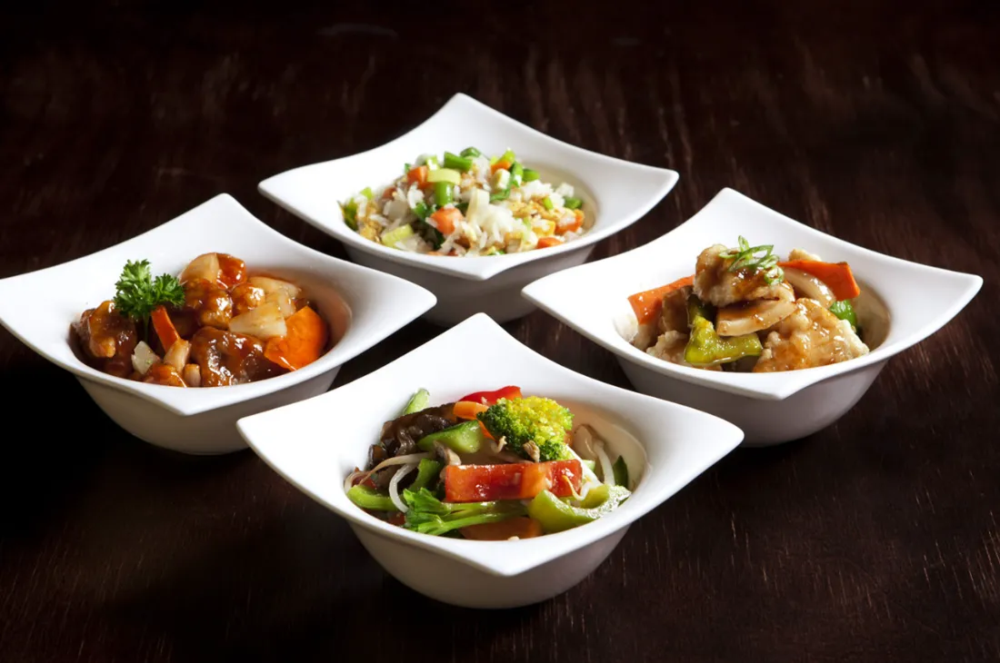
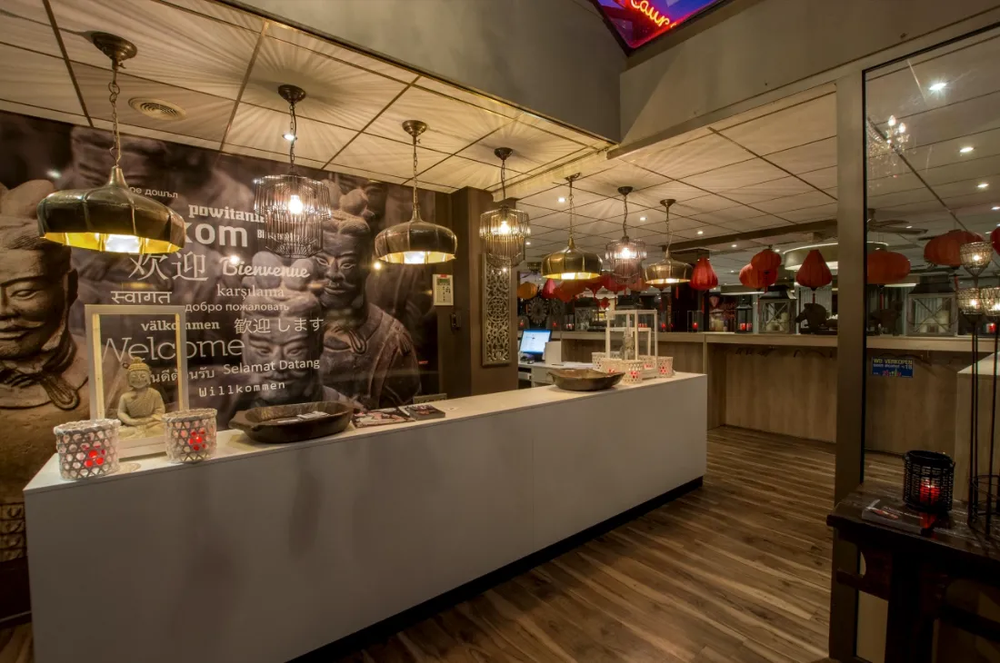
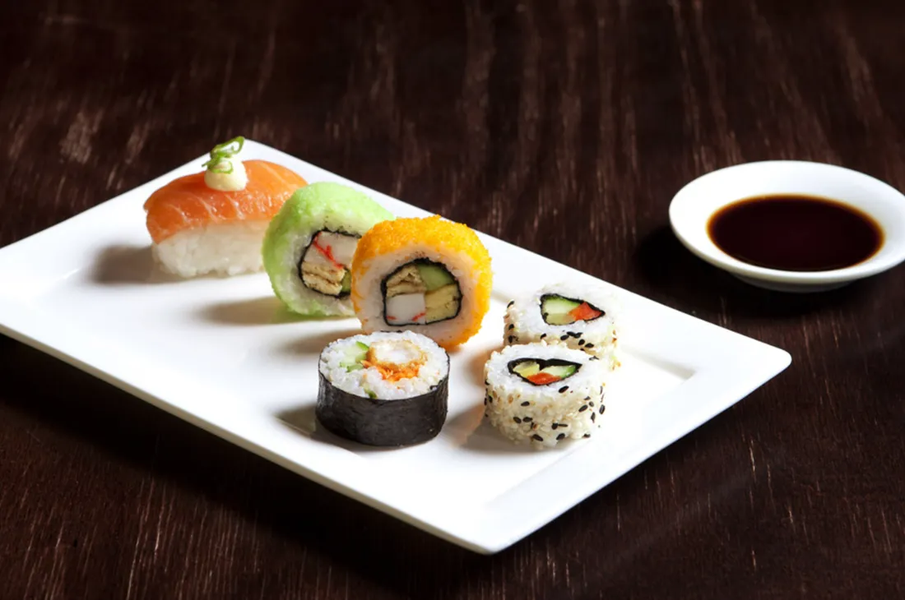
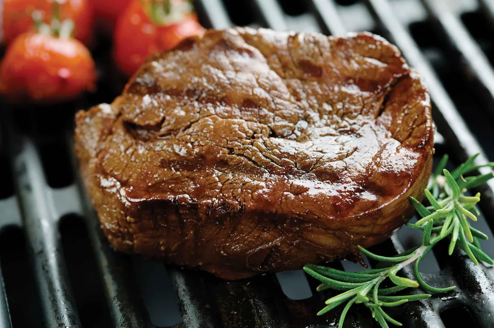
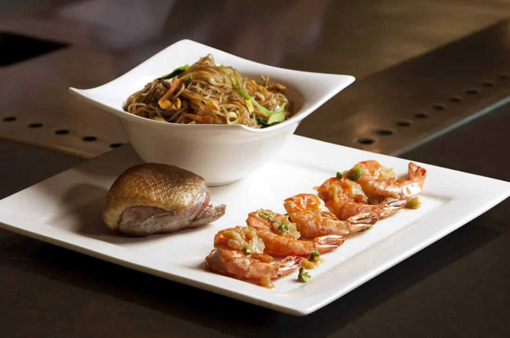
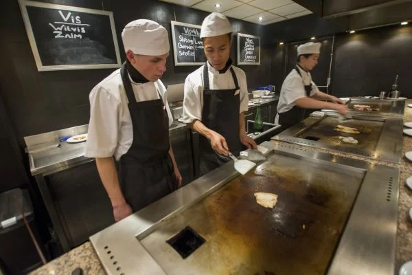
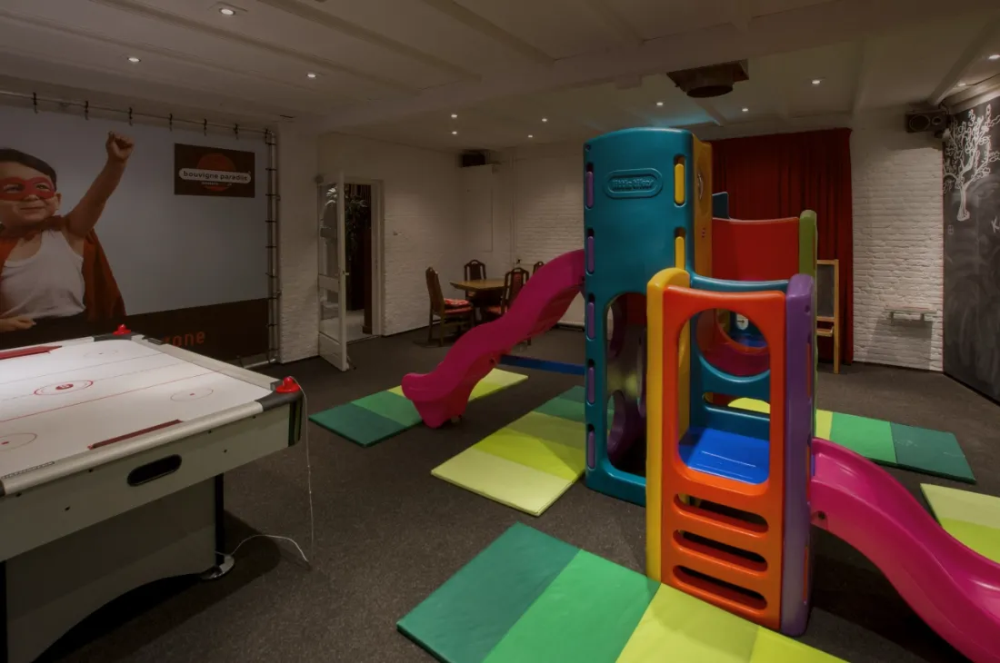
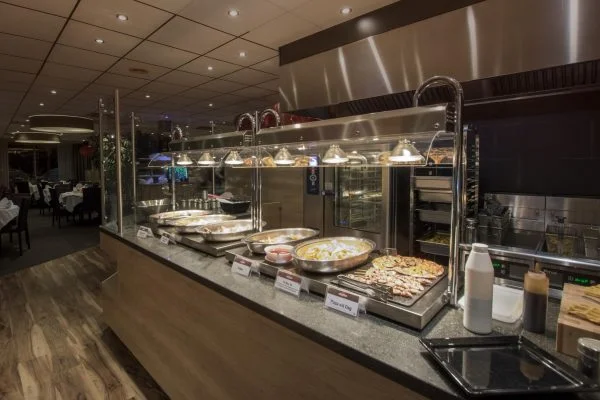

Oosters buffet
Vis-, vlees- en groentegerechten volgens eigen receptuur, vers bereid.
All you can eat in Breda, zonder tijdslimiet
Al ruim 25 jaar het buffetrestaurant van Breda en omstreken. Uw jas wordt aangenomen, u zit aan een tafel met linnen kleed en uw drankjes komen met een glimlach aan tafel.
Nieuw: Kerstdiner 2026
Een uitgebreid all-in Oosters buffet, inclusief drankarrangement. Vanaf 15.00 uur, met een zittingsduur van 2,5 uur. Op nieuwjaarsdag gelden dezelfde prijzen als met Kerst. Er is een beperkt aantal plaatsen.
Bel om te reserveren: 076 560 0600Kerst reserveert u alleen telefonisch.
all-in, inclusief drankarrangement
exclusief drank
Wat verwacht u van een goed diner? Wij geloven nog in de traditionele waarden van een restaurant waar uw jas wordt aangenomen. Waar u plaatsneemt aan een tafel met een luxe, linnen kleed. En waar uw drankjes aan tafel worden geserveerd met een glimlach.
U verdient een ouderwets avondje uit, of u nu met z'n tweetjes komt of met tweehonderd. Met trots staat het hele team, sinds 2018 onder leiding van de nieuwe eigenaar, elke dag weer voor u klaar. Het buffetrestaurant in Breda en omstreken waar u het langst kunt genieten, van de grootste keuze, uit de mooiste gerechten.


Vis-, vlees- en groentegerechten volgens eigen receptuur, vers bereid.

Bij de voorgerechten, naast soepen, salades en koude vis- en vleesschotels.

Van de teppanyaki-plaat, waar de koks live voor u koken.
Aan een gedekte tafel, met garderobe, kelners die uw drankjes aan tafel brengen en borden die netjes worden opgeruimd. En zonder tijdslimiet: u blijft zo lang u wilt. De ingrediënten wisselen met de seizoenen, dus er is altijd iets nieuws te proeven.
Soepen, sushi, salades en koude vis- en vleesschotels.

Oosterse vis-, vlees- en groentegerechten volgens eigen receptuur, vers bereid. Op de teppanyaki-plaat wordt live voor u gekookt.
Chocolade- en vanillemousse, diverse ijssmaken, slagroom, soesjes, poffertjes, warme kersen en vers fruit.

Er staan ook gerechten uit andere keukens voor wie het Oosterse niet aandurft. En voor de kinderen is er pizza en zijn er frietjes.
Allergieën of zoutarm? Meld het vooraf bij de leidinggevende, dan denken we graag met u mee. Kruisbesmetting kunnen we in een buffetkeuken niet volledig uitsluiten.
Eén vaste prijs voor het buffet, zo lang u wilt. Op feestdagen en bijzondere dagen geldt een speciaal tarief: bel ons daarvoor even.
All you can eat met 2 uur drankarrangement voor € 30,- p.p. zonder alcohol of € 32,- p.p. met alcohol. Alleen met de voordeelpas (eenmalig € 27,-, een jaar geldig). Feestdagen uitgezonderd.
Alleen telefonisch te reserveren: 076 560 0600Op uw verjaardag zelf krijgt u het uitgebreide all-in buffet gratis (exclusief drank), bij minimaal 4 betalende volwassenen. Neem een geldig ID mee. Niet te combineren met andere acties.
Alleen telefonisch te reserverenEen cadeaubon koopt u in het restaurant. VVV-bonnen en dinercheques zijn niet geldig. Op rekening betalen kan, met uw factuurgegevens vooraf en ID plus visitekaartje (€ 10,- administratiekosten). Huisdieren zijn niet toegestaan, ook niet op het terras.

Bij ons is de hele familie welkom. Er zijn altijd verschillende kindergerechten, voor elke smaak. En als de kinderen klaar zijn met eten (meestal nét iets eerder dan de volwassenen), lonkt het Kinder Paradijs:
Zo eet u rustig verder, en bij het dessertbuffet ziet u ze vást wel weer terug. De speelruimte is voor kinderen tot 11 jaar.
In het weekend is er waar mogelijk een kinderjuf aanwezig. Die vervangt het ouderlijk toezicht niet.
Twee ruime etages, elk met een eigen buffet en meerdere zalen. Samen ruim 800 zitplaatsen, en ook voor groepen geldt: geen tijdslimiet.
Vanaf 50 personen hebben we speciale arrangementen: groepsdiner, jubileum, productpresentatie, cursus, jaarvergadering of seminar. Een eigen zaal of de hele bovenverdieping, een aparte vergaderruimte, eigen muziek, een dansvloer, een optreden of een pianist: het kan allemaal.
Ontvangst met koffie en gebak, dan vergaderen, en daarna schuift iedereen aan tafel. De kosten weet u vooraf op de cent nauwkeurig.
Catering van A tot Z, van familiefeest tot bedrijfsevent. Vis, vlees, groenten, sauzen en fruit: zoet, zuur, zacht of scherp, warm of koud. Ingrediënten en bereiding zijn afgestemd op groepen. Vraag gerust naar de mogelijkheden.
De grootste afhaalchinees in de regio. Thuis genieten van de kunst van Oosters eten: een keuzemenu, aangevuld met onmisbare klassiekers.
Kies uw basis
Met saus naar keuze
Met rijst € 2,50, nasi of bami € 3,-, mihoen of Chinese mie € 4,-
Met rijst € 2,50, nasi of bami € 3,-, mihoen of Chinese mie € 4,-
Telefonisch bestellen van dinsdag t/m zondag, 12.00 tot 20.30 uur. De keuken is open vanaf 15.00 uur; uw bestelling staat op de afgesproken tijd voor u klaar.
Bestel: 076 5 600 600
| Maandag | gesloten, behalve op feestdagen |
|---|---|
| Dinsdag t/m vrijdag | vanaf 17.00 uur |
| Zaterdag en zondag | vanaf 16.00 uur |
Bouvignelaan 3
4836 AA Breda
Aan de rand van Breda, op de scheidslijn van het Mastbos en het Markdal, met kasteel Bouvigne en klooster de Klokkenberg in de buurt. Vanaf de A16, A27 en A58 bent u er binnen 5 minuten; vanuit het centrum is het 10 minuten fietsen. Ook veel gasten uit België, zoals uit Antwerpen, Brasschaat en Hoogstraten, weten ons te vinden.
Reserveren raden we aan, maar spontaan langskomen kan ook. Wilt u vandaag nog komen? Bel ons dan even.
Ja, geef het door bij uw reservering. We doen ons best, maar kunnen het niet garanderen.
Nee. U kunt ook per drankje afrekenen.
Zeker. We hebben ruim 800 zitplaatsen, eigen zalen en eventueel de hele bovenverdieping.
We denken graag met u mee; meld het vooraf bij de leidinggevende. Kruisbesmetting is in een buffetkeuken niet voor 100% uit te sluiten.
Van harte. Kinderen tot 11 jaar kunnen spelen in het Kinder Paradijs.
Ja, die koopt u in het restaurant. VVV-bonnen en dinercheques zijn bij ons niet geldig.
Ja, als u vooraf uw factuurgegevens doorgeeft en ter plekke uw ID en visitekaartje laat zien. We rekenen € 10,- administratiekosten.
Ja, direct naast de deur.
Vul het formulier in; u krijgt een bevestiging per mail. Liever bellen? We zijn dagelijks bereikbaar vanaf 12.00 uur.
Voor vandaag reserveren, Kerst, het 65+ voordeel en Jarige Job: alleen telefonisch.
Bel 076 5 600 600We zoeken versterking in de keuken en in de bediening:
Stuur uw motivatie en cv naar info@bouvigneparadijs.nl.